Signature
Sleek, minimal and precise. Built for contemporary architecture and clients who notice the details most people miss.
Explore Signature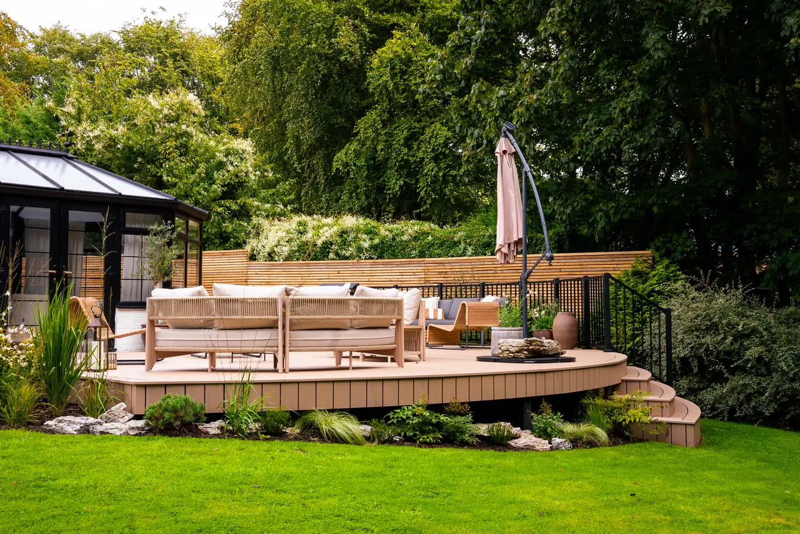
I'm Darren Gooch, Norwich's TrexPRO Platinum installer and one of the few contractors on Trex's own Pro Advisory Council. I build the kind of outdoor space you stop noticing you're standing on and start living in.
Trex builds the board.
I build the deck that lasts.
Transcend Lineage in Carmel: a real photo of a deck built with @wirraldeckingcompany.
TrexPRO Platinum since 2016 Trex Pro Advisory Council, 2024 500+ decks since 2016 5.0 from 10 Google reviews (opens in a new tab)
AI-generated film
I don't think people buy Trex. I think people buy the outdoor space they've been picturing, and Trex happens to be the best material I've found to build it properly.
Darren Gooch, founder
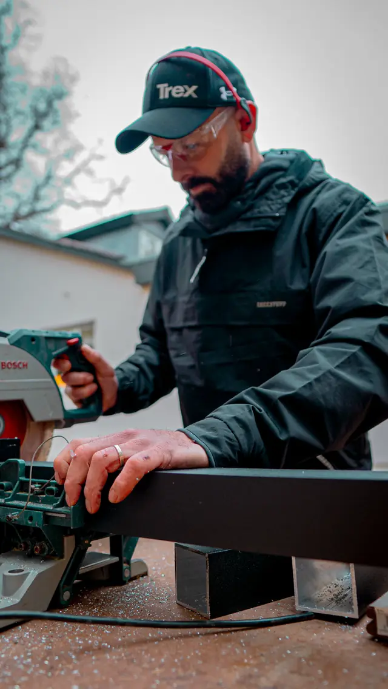
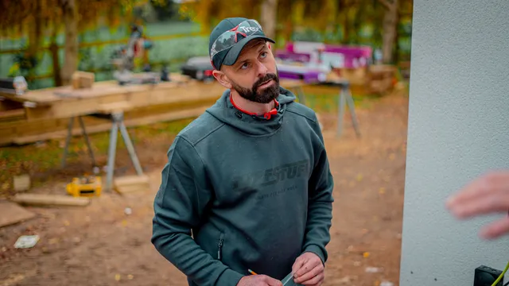
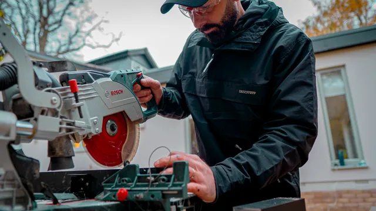
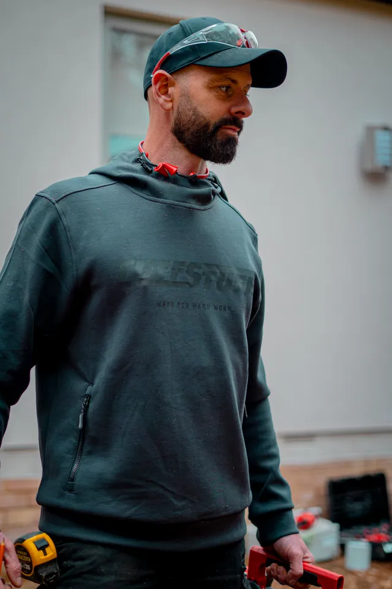
My parents ran a timber yard, and I grew up in it. I've spent every year since building things properly, and since 2014 that's meant one thing: Trex composite decking, done to a standard most installers never bother reaching for.
Read the full storyFrom the family wood yard to Trex's own advisory council.
1987
My parents opened their first premises. I was three years old, running round the yard with my own little hammer.
2002
I joined the family business the day I finished school. By then, if you needed a shed or a fence in Norfolk, you already knew to come and see us.
2014
I started working with Trex composite decking. My partnership with the brand has been an incredible journey ever since.
2016
My own stand-alone adventure: a chance for me to specialise in composite decking projects, using the skills I learnt from making bespoke joinery and timber frames. That's where the Beams & Braces story started.
2016
Trex's highest certification, held by fewer than 5% of their UK contractors.
2024
Invited onto Trex's own advisory council. I've built over 500 composite decks since 2016, including some of the largest curved decks installed anywhere in the UK, and Trex now asks me directly what's actually working on the ground.
Today
I use UC4 pressure-treated joists as standard, with Trex Protect joist tape. If your deck is at ground level, I advise plastic subframes on a concrete raft foundation. Why? I've seen what happens to decks built for price over quality, with limited knowledge. I won't build cheap decks. I build the ones that are still stunning in twenty years.
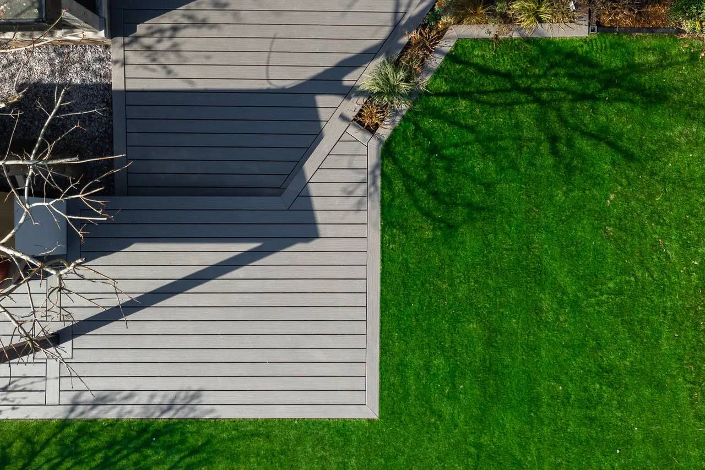
Real wood asks something of you every year: sanding, staining, replacing boards that have started to split. Trex asks nothing. It's what I fit on every job, from a quiet corner of a garden to some of the largest curved decks built anywhere in the UK.
Underneath every deck: UC4 pressure-treated joists and Trex Protect joist tape, with plastic subframes on a concrete raft for ground-level decks. Boards are single-face embossed with a grooved edge, so the fixings stay hidden.
Real board photography, never flat colour blocks. Not sure which is right for your space? I'll bring real samples out to you.
TrexPRO Platinum installer since 2016
Sleek, minimal and precise. Built for contemporary architecture and clients who notice the details most people miss.
Explore SignatureThe richest colours and deepest woodgrain in the Trex lineup. The one I recommend most, built for a lifetime of outdoor living.
Explore TranscendAll the warmth of natural wood, none of the maintenance. Two collections: Naturals and Basics.
Explore Enhance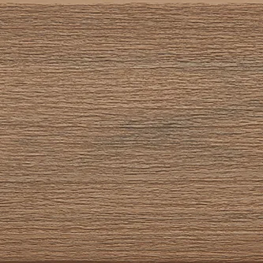
Jasper
Transcend Lineage
Jasper, Biscayne, Rainier and Carmel are Trex Transcend Lineage.
Island Mist, tagged Standard, is standard Transcend.
All five carry the same 50-year fade and stain warranty.
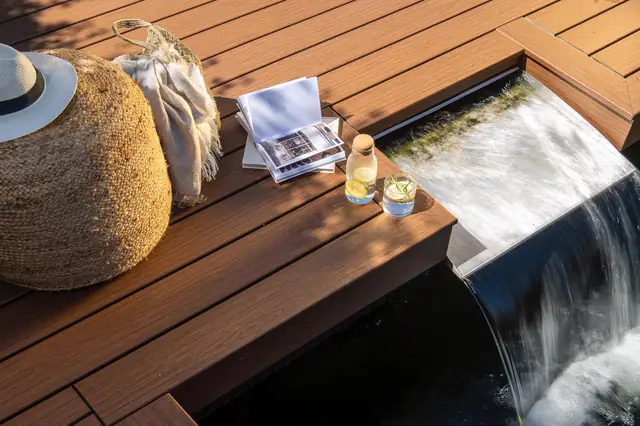
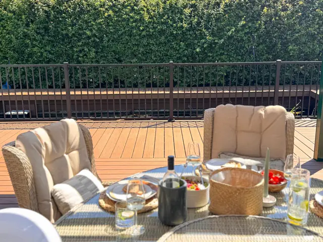
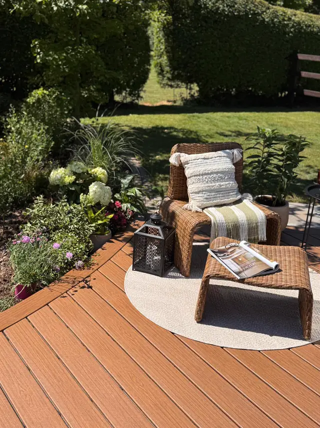
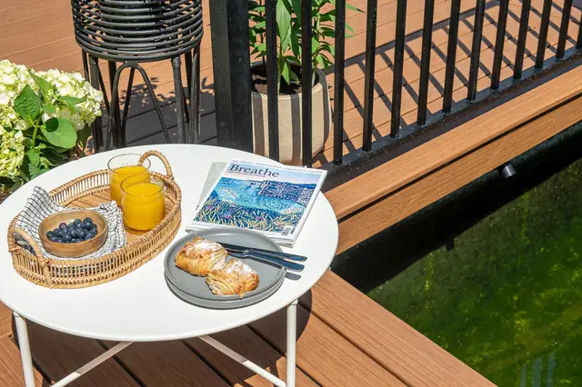
Trex Signature
See the Signature build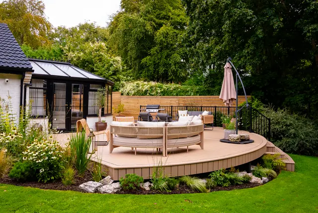
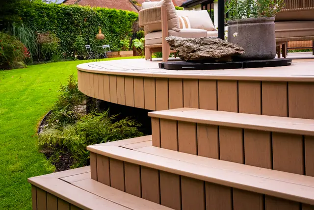
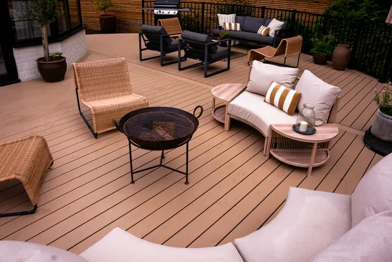
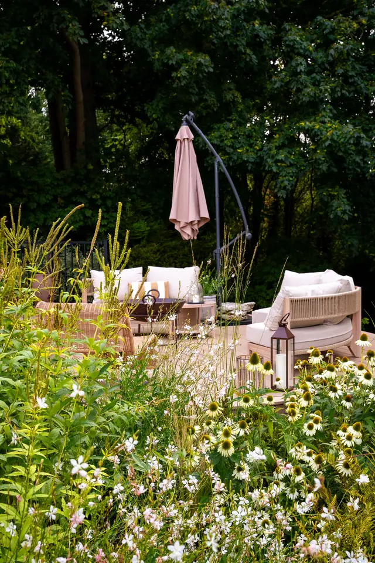


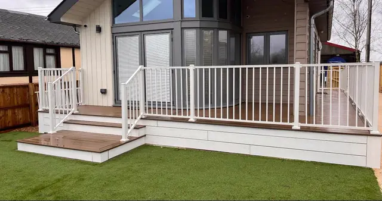
Trex Enhance
Shown in Rocky Harbor and Toasted Sand, from the Naturals collection.
See the Enhance buildsEvery photo here is a job I've built. Select any one to see it larger.
Drone flights over finished decks, and footage from the build itself. Tap any film to watch it with sound.


“Darren is clearly passionate about the Trex product and loves what he does. His enthusiasm is infectious and he elevates the Installation of decking into an art form.”
Jeannette Astley-Jones
“Delighted with the work conducted to transform our small, tired garden by Darren and his team. Great communication throughout, came in below budget, and the work has exceeded our expectations. Great Trex deck in awkward space.”
Dr S J Miller-Smith
“Fantastic company if you want trex decking look no further. Darren was able to discuss all options, arranged a site visit, and designed a bespoke look to complement our existing and new swimspa and Garden Room area.”
Nana
“Darren and his team did a fantastic job. Their attention to detail was excellent. I would recommend them to anyone.”
Jason A
“Delighted with my trex decking. A big thank you to Darren & his team for all their hard work and professionalism.”
Julie
“This company have recently completed our garden. Fantastic employees, very hardworking no matter what the weather, a credit to the company. We are so very pleased with our finished garden.”
Kim Frost
“Excellent design and service. Delighted with our Trex decking.”
Mark Burgess
“Excellent craftsmanship.”
Cherry Brooks
Message me directly on WhatsApp, or leave your details and I'll call to understand what you're picturing.
Or call 07983 531860